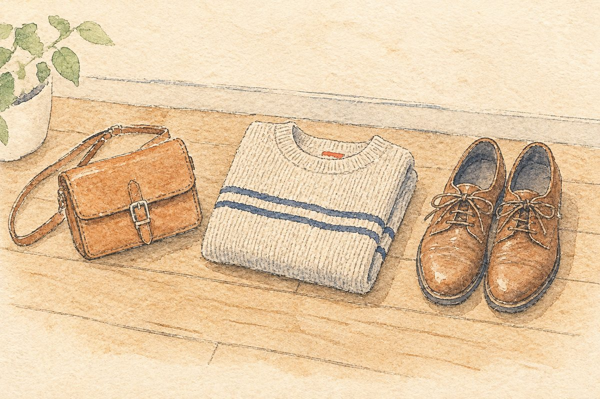

革バッグ・ニット・靴は要注意：免税にならない品物と簡易税率表

課税価格の合計が20万円以下の普通の荷物なら、品物ごとに細かく調べなくても、ざっくり分けた「簡易税率」で関税を計算できます。ただ、革のバッグ・ニットの服・靴などは簡易税率の対象外で、ふつうの関税率で計算されます。
簡易税率の一覧（関税）
| 税率 | 主な品物 |
|---|---|
| 20% | トマトソース、氷菓、なめした毛皮（ドロップスキン）、毛皮製品 など |
| 15% | コーヒー、茶（紅茶を除く）、なめした毛皮（ドロップスキンを除く）など |
| 10% | 衣類・衣類付属品（メリヤス編み・クロセ編みを除く）など |
| 5% | 上のどれにも当てはまらない「その他のもの」 |
| 3% | プラスチック製品、ガラス製品、卑金属製品、玩具 など |
| 無税 | ゴム、紙、陶磁製品、鉄鋼・すず製品 など |
お酒は別の決まりで、1リットルあたり、ワインが70円、焼酎などの蒸留酒が20円、清酒・りんご酒などが30円です。
簡易税率が使えない主な品物
- 米などの穀物、ミルク・クリーム、食肉の調製品
- たばこ、精製塩
- 旅行用具やハンドバッグなどの革製品
- ニットの衣類、履物
- 身辺用の模造細貨類（卑金属製を除く）
こうした品物は、ふつうの関税率で計算されます。品物ごとに税率が違うので、このサイトでは数字を載せていません。税関の最新の案内で確かめてください。
ふつうの関税率にしたいときは、納税の前に。簡易税率ではなくふつうの関税率で計算してほしい場合は、納税の前に申し出る必要があります。一度申し出ると、簡易税率には戻せません（税関パンフレットより）。
この表を見るときの注意
この表は関税の税率です。消費税（10%）は別にかかるので、関税が無税の品物でも消費税は払うことになります。
出典
- 税関「少額輸入貨物の簡易税率」（確認日 2026年10月11日）
- 税関パンフレット「個人輸入の通関」（確認日 2026年10月11日）